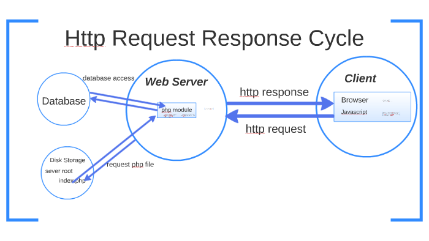

A Complete Guide to Core Internet & Web Concepts
HTTP stands for Hypertext Transfer Protocol. It is the set of rules that governs how data is exchanged between a web browser and a web server. Every time you visit a website, HTTP is working in the background to transfer the page's files from the server to your browser so they can be displayed.
HTTP is what makes the World Wide Web function at a practical level. It defines the format of messages sent between clients (browsers) and servers, as well as what actions can be taken — like requesting a page, submitting a form, or uploading a file.

The HTTP communication model is simple: a client sends a request and a server sends back a response. A request includes a method (like GET to retrieve data, or POST to send data), the URL of the resource, and optional headers with additional information.
The response includes a status code that tells the browser what happened. For example, 200 OK means the request was successful, 404 Not Found means the page doesn't exist, and 500 Internal Server Error means something went wrong on the server's end.
HTTPS is the secure version of HTTP. The "S" stands for Secure, and it means that all communication between the browser and server is encrypted using SSL/TLS technology. This prevents anyone from intercepting and reading the data being transmitted.
Today, most websites use HTTPS. Browsers like Chrome will flag HTTP-only sites as "Not Secure." If you're entering passwords, personal details, or payment information on any website, you should always ensure the URL starts with https://.